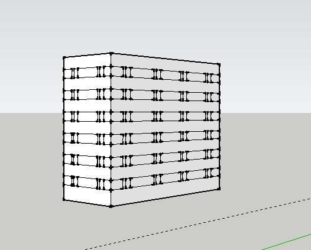
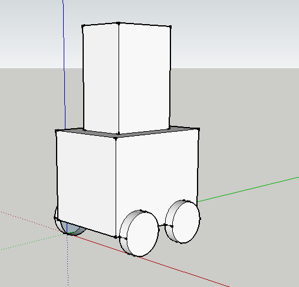
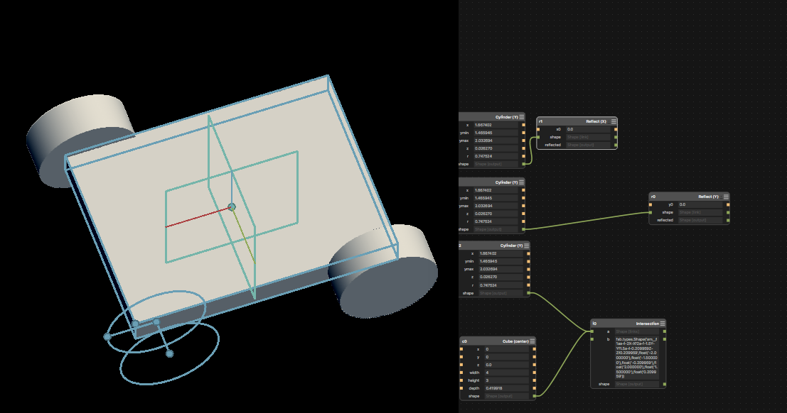

Over the past couple of years I've become increasingly interested in self-organising systems and swarming behaviours. In particular, I'm interested in the application of ideas we get from swarms to problems of organisation on a human scale, for example, in the formation of mesh networks, or in the design of cities. Having done some of agent based modelling to explore these ideas computationally, I'd like to use this class to get a chance to realise some of these ideas 'in the flesh'
One idea I'd like to explore is that of urban patterns: patterns of city formation that are governed by sets of rules both top-down and bottom-up. Architects such as Ekim Tan use these urban rules as the basis for 'city games' -- where residents of a particular area are given the power to modulate and change their built environment, within the bounds of these 'rules' that establish particular criteria for the area. After a (fun, silly) project I did last year involving
termites failing to make street plans I'd be interested to try and practice a city game with a real swarm, while adhering more closely to urban rules.
My 3D CAD experience is fairly basic (Sketchup and not much else), so this week was a real challenge for me. It took a long time to be able to move things about, and I'd like to return to this task after I've got a bit happier with a particular package. I started to think about how my buildings might look in Sketchup: as ever, boxes are easy to build, with more complex shapes introducing some strange artifacts when extruded.


I found Antimony actually more intuitive than a few of the other CAD packages, though that could have been down to its relative simplicity. I managed to design a (very) basic chassis, which I'd like to return to. I also experimented with FreeCad (I found this very hard to do anything), and with Fusion 360 (tough at first, got better as it went along).
